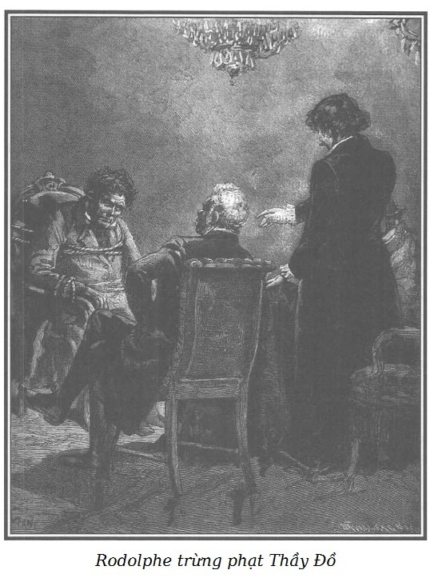

Sự việc xảy ra trong phòng khách căng vải đỏ, đèn sáng trưng.
Rodolphe mang một áo dài mặc trong nhà bằng nhung đen khiến da mặt càng tái xanh hơn. Ông ngồi trước một bàn lớn phủ thảm. Trên bàn có hai cái ví, một cái Thầy Đồ trấn lột của Tom, một cái của chính tên cướp; có dây chuyền bằng vàng giả của mụ Vọ đeo tượng thánh nhỏ bằng đá lam ngọc, con dao găm còn vấy máu Murph, cái kìm sắt dùng để nậy khóa và cuối cùng là năm ngàn franc mà Chọc Tiết đã đem từ phòng bên tới.
Ông bác sĩ da đen ngồi bên một góc bàn, Chọc Tiết ở góc kia. Thầy Đồ bị trói chặt không thể cử động, ngồi trên một ghế bành lớn có bánh xe ở giữa phòng.

.Những người đưa lão đến đã rút lui, chỉ còn lại Rodolphe, ông bác sĩ, Chọc Tiết và tên giết người.
Rodolphe không giận dữ nữa, ngồi im lặng, trầm tư, buồn bã, ông sẽ thực hiện một sứ mệnh thiêng liêng và khủng khiếp.
Ông bác sĩ có vẻ suy tư.
Chọc Tiết cảm thấy một nỗi lo sợ xác định, y không rời mắt khỏi Rodolphe.
Thầy Đồ tái mét mặt… lão sợ. Một vụ bắt giam hợp pháp đối với lão có thể còn ít rùng rợn hơn, sự lỳ lợm của lão còn có thể sẽ giữ được trước một tòa án thông thường. Nhưng tất cả xung quanh giờ đây khiến lão kinh hoàng, run sợ. Bây giờ lão đã thuộc quyền Rodolphe, người mà lão chỉ coi như một anh thợ thủ công dễ bị lão lừa, có thể chùn tay trước khi hành sự, và do ngờ vực, lão muốn khử đi, hy vọng một mình chiếm hết của ăn trộm. Thế mà giờ đây, lão thấy Rodolphe vừa đáng sợ vừa uy nghi như thần công lý.
Bên ngoài vô cùng im lặng. Người ta chỉ nghe thấy tiếng mưa rơi, rơi từ trên mái xuống mặt đường.
– Trốn khỏi nhà tù Rochefort nơi mày bị chung thân vì tội giả mạo, lừa đảo, trộm cướp và giết người, mày chính là Anselme Duresnel.
– Không đúng, có gì chứng tỏ nào. – Thầy Đồ nói lạc giọng, đảo mắt nhìn quanh như mắt thú và lo lắng.
– Sao! – Chọc Tiết thét lên. – Chúng ta không cùng bị tù ở Rochefort à?
Rodolphe ra hiệu, Chọc Tiết thôi không nói nữa.
Rodolphe nói tiếp:
– Mày chính là Anselme Duresnel, rồi mày sẽ phải thừa nhận, mày đã giết người và lấy đi của cải của người lái bò trên đường Poissy.
– Không đúng. Không phải tôi.
– Rồi mày sẽ phải thú nhận.
Tên cướp ngạc nhiên nhìn Rodolphe.
– Đêm nay, mày lại đột nhập vào đây để ăn trộm, mày đã đâm ông chủ nhà này.
– Chính ông đã rủ tôi vào đây lấy trộm. – Thầy Đồ lấy lại được đôi chút tự tin. – Người ta tấn công tôi, tôi chống lại.
– Người mà mày đâm không hề tấn công mày, ông ta không có vũ khí! Tao rủ mày làm vụ trộm này à, điều đó đúng rồi, tao sẽ nói cho mày biết vì mục đích gì. Đêm qua, mày đã trấn lột một người đàn ông và một người đàn bà trong thành phố. Sau khi đánh cắp cái ví này, mày đã tình nguyện nhận với chúng rằng sẽ giết tao để lấy một nghìn franc.
– Tôi đã nghe nó nói! – Chọc Tiết nói to.
Thầy Đồ ném một cái nhìn hằn học dữ tợn về phía y.
Rodolphe nói tiếp:
– Mày thấy chưa, không cần bị tao rủ rê, mày cũng có thể gây án!
– Ông không phải quan tòa, tôi không trả lời nữa.
– Đây này, tại sao tao lại rủ mày cùng đi ăn trộm. Tao biết mày vượt ngục. Mày biết cha mẹ một cô gái bất hạnh mà con mụ Vọ, đồng lõa với mày, đã gần như gây ra cho cô ấy biết bao nhiêu là đau khổ. Tao muốn dụ mày đến đây bằng cái mồi một vụ trộm, cái mồi duy nhất có thể nhử được mày. Một khi đã ở trong tay tao, tao để mày chọn, hoặc giao mày cho tòa án để mày phải trả giá vụ giết người lái bò bằng cái đầu mày…
– Không đúng! Không phải tôi.
– … Hoặc mày sẽ bị đưa đi đày ải suốt đời, nhưng với điều kiện mày cho tao biết những tin tức tao cần biết. Mày đã bị tù chung thân, mày vượt ngục. Bắt được mày, tao sẽ khiến mày từ nay không hại ai được nữa. Tao đã làm một việc có ích cho xã hội và với lời thú tội của mày, tao sẽ tìm cách để có thể cho sum họp lại với gia đình một con người khốn khổ nhiều hơn là phạm tội. Đó là dự kiến ban đầu của tao, nó không thật hợp pháp nhưng với sự trốn chạy của mày và bởi những tội ác mới của mày, mày đã bị đặt ra ngoài vòng pháp luật. Hôm qua, nhờ một sự may mắn tình cờ tao đã phát hiện được tên thật của mày.
– Không đúng! Tôi không phải là Duresnel.
Rodolphe lấy trên bàn sợi dây chuyền của mụ Vọ và chỉ cho Thầy Đồ tượng thánh bằng đá lam ngọc.
– Quân vô đạo! – Rodolphe thét lên đe dọa. – Mày đã làm ô uế di vật thiêng thiêng này… vì đem cho một đứa ti tiện. Ba lần thiêng liêng cơ đấy, vì con mày giữ kỷ vật thành kính này của mẹ nó, của tổ tiên nó!
Thầy Đồ sửng sốt trước phát hiện ấy, cúi đầu không trả lời.
– Hôm qua, tao được biết mày đã cướp con trai mày từ tay mẹ nó cách đây mười lăm năm và chỉ có mày mới biết những bí ẩn về sự sống còn của nó. Hành động xấu xa mới phát hiện này đã cho tao chứng cứ để khẳng định về mày, ấy là chưa nói đến những chuyện đối với tao. Không phải vì thế mà tao trả thù riêng. Đêm nay, mày lại gây chuyện đổ máu không nguyên cớ. Người mày định giết đến với mày không đề phòng. Người ta chỉ hỏi mày muốn gì, mày đòi tiền, tính mạng và mày đã dùng dao găm.
– Đúng như ông Murph kể khi tôi đến cứu ông ấy. – Ông bác sĩ xác nhận.
– Không đúng, ông ấy nói láo.
– Murph không bao giờ nói dối. – Rodolphe lạnh lùng nói. – Tội ác của mày đương nhiên xứng đáng với một sự trả đũa sòng phẳng. Lũ chúng mày đã đột nhập vào vườn này. Mày đã đâm người để cướp của, mày lại phạm tội ác mới. Đáng lẽ ra mày phải chết ở đây, nhưng vì thương hại vợ mày và đứa con trai mày, tao sẽ giúp mày thoát khỏi sự ô nhục vì chết trên máy chém. Người ta sẽ nói mày bị giết với vũ khí trong tay… Mày chuẩn bị đi. Súng đã nạp đạn.
Rodolphe tỏ ra không khoan nhượng.
Thầy Đồ quan sát thấy trước cửa có hai người mang súng trường. Tên của lão đã bị lộ, lão nghĩ người ta sẽ loại bỏ lão để vùi sâu trong bóng tối những tội ác cuối cùng của lão và để tránh gia đình lão khỏi một điều sỉ nhục mới.
Giống như đồng bọn của lão, con người này cũng vừa hèn vừa man rợ. Tưởng sắp đến lúc chết, lão run lẩy bẩy, mặt trắng bệch, lão kêu lên nghẹn ngào:
– Xin tha cho tôi.
– Không thể tha thứ cho mày. – Rodolphe nói. – Nếu không bắn vỡ sọ mày ở đây, máy chém sẽ chờ mày.
– Máy chém vẫn hơn, ít nhất tôi còn được sống thêm vài ba tháng nữa. Thử hỏi ông được gì nào? Vì cuối cùng tôi cũng bị trừng phạt kia mà, xin gia ân cho tôi, xin gia ân cho tôi.
– Nhưng vợ mày, con trai mày, họ mang tên họ của mày?
– Tên tuổi của tôi đã bị ô nhục… Khi tôi chỉ còn có thể sống thêm tám ngày. Xin gia ân cho tôi.
– Mày cũng chẳng có nổi thói anh hùng coi thường cái chết như thường thấy ở những tên trọng phạm à? – Rodolphe ghê tởm hỏi.
– Vả lại luật pháp cấm không cho phép cá nhân được tự mình xét xử kia mà. – Thầy Đồ nói, ra vẻ tự tin.
– Luật pháp ư? – Rodolphe nói to. – Luật pháp, mày cũng dám viện đến luật pháp ư? Chính mày, từ ba mươi năm nay đã công khai nổi loạn, cầm vũ khí chống lại xã hội.
Tên cướp gục đầu xuống, không trả lời được, rồi nói với giọng khúm núm:
– Ít ra cũng để cho tôi được sống, xin ông làm phúc!
– Mày có cho tao biết con trai mày giờ ở đâu không?
– Có… tôi xin nói tất cả những gì tôi biết.
– Mày có cho tao biết ai là cha mẹ cô gái mà lúc nhỏ đã bị mụ Vọ hành hạ không?
– Trong ví của tôi có những giấy tờ cho phép tìm ra tung tích của họ. Hình như mẹ cô gái là một bà lớn.
– Con trai mày ở đâu?
– Ông có để tôi được sống không?
– Hãy thú nhận trước đã.
– Có nghĩa là khi ông đã biết… – Thầy Đồ nói ngập ngừng.
– Chắc mày đã giết nó?
– Không! Không! Tôi đã giao nó cho một chiến hữu của tôi, tên này đã trốn thoát khi tôi bị bắt.
– Đồng bọn mày đã làm gì nó?
– Đã nuôi nó khôn lớn và đã dạy nó những mánh lới cần thiết để vào làm trong ngành thương nghiệp, hòng sử dụng sau này, tôi sẽ không nói ra hết nếu ông không hứa là sẽ tha chết cho tôi.
– Lại còn ra điều kiện, đồ khốn nạn!
– Không, không dám, nhưng xin ông hãy thương tôi, ông hãy bắt giữ tôi như thủ phạm đã gây tội ác hôm nay, đừng nói đến chuyện khác, hãy để cho tôi hy vọng còn giữ được cái đầu.
– Mày muốn sống ư?
– Chao ôi, vâng ạ! Vâng ạ! Biết đâu ạ! Người ta không thể đoán trước những việc sẽ đến. – Tên cướp bất giác trả lời. Nó đã nghĩ ngay đến khả năng lại vượt ngục lần nữa.
– Mày muốn sống với bất cứ giá nào ư? Sống…
– Nhưng phải sống ạ! Dù là bị xiềng xích suốt đời! Dù một tháng, dù là tám ngày đi nữa! Ôi! Xin đừng bắt tôi chết ngay bây giờ…
– Thú nhận tất cả tội ác của mày đi, mày sẽ được sống.
– Tôi sẽ được sống! Ôi! Thật chứ! Tôi sẽ được sống!
– Nghe đây, vì xót thương vợ mày, con trai mày, tao muốn khuyên mày một lời đúng đắn, hãy chết hôm nay, chết đi.
– Trời ơi! Đừng! Đừng! Ông đã hứa rồi kia mà! Ông hãy để tôi được sống, cuộc sống dù khổ sở đến đâu, ghê sợ đến đâu cũng không nghĩa lý gì so với cái chết.
– Mày muốn thế chứ?
– Ôi! Vâng, vâng ạ.
– Mày muốn sống thế chứ?
– Ôi! Không bao giờ tôi dám kêu ca nữa.
– Vậy, thằng con mày, mày đã làm gì nó?
– Người bạn mà tôi nói với ông, cho nó học nghề kế toán rồi đưa vào làm việc trong một ngân hàng để nó có thể thông tin cho chúng tôi về một vài mặt nào đó. Chúng tôi đã thỏa thuận với nhau như thế. Mặc dù bị giam ở Rochefort, trong khi chờ vượt ngục, tôi vẫn điều khiển việc thực hiện âm mưu ấy, chúng tôi thông tin cho nhau bằng mật mã.
– Thằng này ghê gớm thật! – Rodolphe lắc đầu hoảng sợ. – Có những tội ác không ngờ tới. Thú nhận đi! Thú nhận đi! Tại sao mày muốn đưa con mày vào làm việc trong một ngân hàng?
– Để… ông hiểu không… Vốn đã thỏa thuận với chúng tôi, giữ kín việc đó… khi chủ ngân hàng đã tin cậy… làm nội ứng cho chúng tôi và…
– Trời đất ơi! Lạy Chúa! Con nó! Con nó! – Rodolphe vừa đau xót vừa ghê tởm che mặt bằng hai bàn tay.
– Nhưng đấy chỉ là chuyện giả mạo giấy tờ. – Tên cướp nói. – Và còn nữa, khi người ta cho nó biết những gì người ta chờ đợi thêm ở nó, thằng con tôi đã phẫn nộ và sau một lần va chạm nặng nề với người nuôi nó vì mưu đồ của chúng tôi, nó biến mất. Có lẽ đến mười tám tháng rồi. Từ đó, không ai biết nó ra sao. Ông sẽ thấy trong ví tôi những chỉ dẫn mà người bạn tôi đưa để lùng kiếm nó. Chúng tôi sợ nó sẽ tố cáo tổ chức của chúng tôi; nhưng người ta mất dấu vết nó ở Paris. Cái nhà nó ở cuối cùng là số 14, phố Temple dưới cái tên François Germain, địa chỉ cũng ở trong ví tôi. Ông thấy đấy, tôi đã nói tất cả, ông hãy giữ lời hứa, chỉ cho bắt tôi vì tội ăn trộm tối nay.
– Thế còn người lái bò ở Poissy?
– Việc này không thể điều tra ra được. Không có chứng cứ gì. Tôi chỉ muốn thú nhận với ông để chứng tỏ tôi thành khẩn. Còn trước quan tòa tôi sẽ chối phắt đi.
– Vậy thú nhận chứ?
– Tôi đang trong lúc cùng đường, chưa biết làm gì để sống, chính mụ Vọ đã mách nước cho tôi. Bây giờ tôi hối hận. Ông thấy đấy, tôi đã thú nhận. Ôi! Nếu ông là người độ lượng, ông đừng đưa tôi ra tòa, tôi xin lấy danh dự cam đoan với ông là sẽ không tái phạm nữa.
– Mày sẽ sống và tao sẽ không đưa mày ra trước pháp luật.
– Ông tha cho tôi? – Thầy Đồ reo lên, không tin vào tai mình nữa. – Ông tha cho tôi thật à?
– Tao xét xử mày vì tao trừng phạt mày! – Giọng Rodolphe vang vang. – Tao sẽ không đưa mày ra tòa vì như vậy mày sẽ bị lưu đày hoặc lên máy chém và không nên như thế. Không, không nên như thế. Lưu đày ư? Để mày lại thống trị bọn lộn xộn vô sỉ bằng sức khỏe của mày, bằng tính gian ác của mày sao! Để lại thỏa mãn bản tính tàn bạo, thích đàn áp người khác hay sao? Để ai cũng phải ghê sợ kinh hãi mày sao? Vì tội ác có niềm kiêu hãnh của nó, mày sẽ lại vui mừng về cái thói gian ác quái gở của mày! Lưu đày ư? Không! Không đâu, thân hình như thép của mày sẽ bất chấp mọi cực nhọc của lao động khổ sai và cái gậy của những người cai ngục, và rồi xích xiềng sẽ bị bẻ, tường sẽ bị khoét, thành lũy sẽ bị vượt và một ngày nào đấy, mày sẽ trốn thoát để lại lao vào đời sống xã hội như một con thú dữ hóa điên, đánh dấu những nơi mày đi qua bằng cướp bóc, giết chóc, vì không mấy ai thoát được trước sức khỏe vô song của mày, trước mũi dao của mày. Không, không thể như vậy được, vì nếu lưu đày, mày sẽ trốn thoát. Muốn bảo vệ xã hội trước tính cuồng dữ của mày, phải làm gì đây? Giao mày cho đao phủ chăng?
– Thì ra ông chỉ muốn tôi phải chết. – Thầy Đồ rít lên. – Chỉ có cái chết của tôi?
– Chết à? Mày đừng hy vọng thế! Mày quá hèn, mày sợ chết vô cùng! Mà chẳng bao giờ mày tin là cái chết sắp đến với mày. Trong sự cay cú ham sống của mày, trong niềm hy vọng ngoan cố của mày, mày tưởng mày sẽ tránh được những phút kinh hoàng khi hấp hối à? Hy vọng ngớ ngẩn, điên rồ. Khỏi cần, cái chết sẽ che đậy cho mày không phải thấy nỗi ghê sợ của nhục hình; mày chỉ tin cái đó dưới bàn tay đao phủ và như vậy, mụ mẫm đi vì sợ hãi, mày chỉ còn là vật bất động không hồn mà người ta hiến dâng như một lễ vật cho những oan hồn mày đã giết hại… Như thế không thể được, mày tưởng đến phút cuối cùng mày sẽ trốn thoát ư? Mày, con quái vật gớm ghiếc kia! Hy vọng à? Làm sao được! Hy vọng với những ảo giác êm ái dịu dàng an ủi sẽ không bao giờ lọt vào những bức tường nhốt kẻ điên… Cho đến khi mắt mày lạc đồng tử, dại đi. Thôi đi! Quỷ Satan sẽ cười cho. Nếu mày không hối hận, tao sẽ không muốn mày còn hy vọng gì nữa trong cuộc đời này, tao nói như thế đấy.
– Nhưng tôi đã làm gì con người này? Họ là ai. Họ muốn gì ở tôi? Tôi ở đâu thế này? – Thầy Đồ kêu lên trong cơn mê sảng.
Rodolphe nói tiếp:
– Ngược lại nếu mày dám trâng tráo thách thức cái chết thì lại càng không nên cho mày chết. Vì nhục hình, đối với mày lúc đó, máy chém sẽ chỉ là một cái giá, ở đấy như bao thằng khác, mày sẽ đưa sự hung bạo ra phô trương; ở đấy, khi chẳng lý gì đến cuộc đời khốn nạn của mày, mày sẽ đày đọa linh hồn mày bằng những lời báng bổ cuối cùng. Lại càng không nên như thế. Không hay gì để cho dân chúng thấy tên tử tù đùa giỡn với máy chém, xem khinh đao phủ, cười khẩy thổi tắt tia lửa thiêng mà Đấng tạo hóa đã đặt ở mỗi con người. Thiêng liêng thay sự giải thoát của một linh hồn, mọi tội ác tự sám hối và tự chuộc. Chúa cứu thế đã dạy như vậy. Nhưng chỉ đối với ai thực tâm muốn chuộc lỗi và ăn năn thôi. Từ phiên tòa xử án đến nơi xử chém khoảng cách quá gần, không nên để mày chết như vậy.
Thầy Đồ chán ngán rã rời. Lần đầu tiên trong đời lão thấy một cái gì đó đáng sợ hơn cái chết. Nỗi sợ hãi mơ hồ ấy thật khủng khiếp.
Ông bác sĩ và Chọc Tiết hồi hộp nhìn Rodolphe, họ run sợ lắng nghe giọng nói vang vang, đanh thép, không mảy may thương xót, họ cảm thấy se lòng, tim họ như thắt lại.
Rodolphe nói tiếp:
– Anselme Duresnel, mày sẽ không bị vào tù, mày cũng sẽ không bị chết.
– Nhưng ông muốn làm gì tôi? Địa ngục cử ông lên đây chăng?
– Nghe đây… – Rodolphe trịnh trọng đứng dậy và với cử chỉ oai nghiêm của quyền lực, ông nói. – Mày đã ỷ vào sức mạnh của mày để phạm tội ác, tao sẽ làm tê liệt sức mạnh ấy của mày. Những người khỏe mạnh nhất cũng đã run sợ trước mày. Tao sẽ khiến mày run sợ trước những người yếu nhất. Quân giết người, mày đã nhấn chìm nhiều sinh linh của Đấng Sáng thế trong bóng đêm vĩnh cửu. Tao sẽ khiến đời mày từ nay bắt đầu trong tối tăm vĩnh cửu. Hôm nay, chỉ lát nữa thôi, hình phạt sẽ tương xứng với tội ác của mày. Nhưng – Rodolphe nói thêm vẻ thương hại xót xa – hình phạt ghê gớm này ít nhất sẽ dành cho mày một triển vọng lớn để mày sám hối… Tao cũng sẽ phạm tội ác như mày nếu tao trừng phạt mày chỉ nhằm thỏa mãn ý chí báo thù riêng của tao, dù rằng báo thù là chính đáng mấy đi chăng nữa. Không vô bổ như cái chết, hình phạt phải có ích. Không đày đọa mày, nó giải tội cho mày. Nếu như để cho mày hết khả năng hại người, tao tước đi của mày ánh sáng rực rỡ của Đấng Sáng thế, nếu tao nhấn chìm mày trong đêm tối mịt mùng, một mình mày với những hồi ức về tội ác, chính là để cho mày day dứt không ngừng về những tai hại to lớn do mày gây nên. Đúng! Bị cách ly vĩnh viễn với thế giới bên ngoài, mày bắt buộc phải luôn luôn nhìn vào bản thân mày và như vậy tao hy vọng cái mặt xám đen vì tội ác của mày sẽ đỏ lên vì xấu hổ. Tâm hồn mày xơ cứng vì hành động dã man, bị gặm mòn vì tội ác, sẽ nhụt đi vì ăn năn, mỗi lời nói của mày trước đây chỉ là lời báng bổ, giờ thì mỗi lời nói của mày sẽ là lời cầu nguyện. Mày táo tợn và độc ác vì mày khỏe, mày sẽ hiền lành và khiêm tốn vì mày yếu đi. Tâm hồn mày đã đóng lại trước ăn năn, có ngày mày sẽ khóc những nạn nhân của mày. Mày đã hủy hoại trí thông minh mà Chúa ban cho mày, mày đã biến nó thành bản năng cướp đoạt, giết chóc. Là người nhưng mày đã thành thú dữ. Ngày nào đó, trí thông minh của mày sẽ được tôi lại trong hối hận, tự hồi phục lại trong sám hối. Mày cũng không còn biết trân trọng cả những điều mà ngay cả thú dữ cũng còn biết trân trọng… vợ và con. Sau quãng đời dài dành cho ăn năn hối lỗi về tội ác của mày, lời cầu nguyện cuối cùng của mày sẽ xin Thượng đế cho mày được hưởng niềm hạnh phúc quá sức mong đợi là được chết giữa vợ và con.
Rodolphe nói những lời cuối cùng này với giọng bùi ngùi cảm động. Lão Thầy Đồ cảm thấy bớt sợ. Lão tưởng Rodolphe muốn khiến lão run sợ trước những lời giảng giải về đạo lý. Hầu như yên tâm vì giọng nói bớt gay gắt của người xét xử lão, càng bớt sợ càng ngạo mạn, lão cười thô bỉ:
– Ái chà, lại cái trò chơi chữ! Ở đoạn nào trong Kinh Thánh đấy?
Người da đen lo lắng nhìn Rodolphe, chờ đợi một cơn nổi giận ghê gớm.
Chẳng sao cả! Rodolphe lắc đầu với vẻ buồn khổ khó tả và nói với ông bác sĩ.
– Hành động đi David, Thượng đế chỉ trừng phạt mình ta nếu ta lầm! – Và Rodolphe lấy tay che mặt.
Nghe mấy tiếng “hành động đi David”, người da đen bấm chuông. Hai người mặc quần áo đen bước vào. Ông bác sĩ ra hiệu, chỉ cửa phòng bên.
Hai người đẩy cái ghế có bánh xe trên đó, Thầy Đồ bị trói gô không còn cựa quậy được. Đầu bị cột chặt vào thành ghế bằng một cái khăn quàng quanh cổ và vai.
– Hãy ghìm trán nó vào ghế bằng một cái khăn tay và nhét giẻ vào mồm nó. – David ra lệnh, không bước vào phòng.
– Ông định cắt họng tôi bây giờ sao? Tha cho tôi. – Thầy Đồ la lên. – Tha cho tôi!
Thế rồi chỉ còn nghe tiếng thì thào lộn xộn.
Hai người trở lại, ông bác sĩ ra lệnh họ rút lui.
– Thưa Đức ông? – Người da đen hỏi Rodolphe lần cuối.
– Thưa ông Rodolphe, tôi sợ. – Chọc Tiết nói, mặt tái mét, giọng run run. – Thưa ông Rodolphe, nói cho tôi biết đi… Tôi sợ… Có phải tôi nằm mơ không? Ông bác sĩ da đen ấy, ông ta sẽ làm gì lão vậy. Cái lão Thầy Đồ ấy? Thưa ông Rodolphe, chẳng nghe thấy gì cả… Thế càng làm tôi sợ hơn.
David ra khỏi phòng bên, mặt tái xanh, môi trắng nhợt, ông ta bấm chuông.
Hai người trở lại.
– Đưa chiếc ghế vào.
Người ta đưa Thầy Đồ vào.
– Rút khăn bịt miệng lão ra.
Người ta rút ra cho lão.
– Vậy là ra ông muốn tôi bị giày vò khốn khổ ư? – Thầy Đồ thét lên giận dữ hơn là đau đớn. – Tại sao ông lại chơi cái trò đâm mù mắt tôi như thế này? Ông đã làm khổ tôi. Có phải ông muốn đày đọa tôi trong đêm tối mà ông đã làm tắt ánh sáng ở đây như ở trong kia không?
Một phút im lặng rùng rợn.
Sau đó David xúc động nói:
– Anh mù rồi!
– Không đúng! Như vậy không thể được. Các ông đã cố ý khiến tôi rơi vào đêm đen vĩnh viễn. – Tên cướp thét lên, giãy giụa rất mạnh trên ghế.
Rodolphe ra lệnh:
– Cởi trói cho lão, để cho lão đứng lên, để cho lão đi.
Hai người cởi trói cho Thầy Đồ.
Lão đứng dậy đột ngột, bước một bước, tay quờ quạng ra phía trước rồi lại buông mình xuống ghế, giơ tay lên trời.
– David, đưa chiếc ví cho lão. – Rodolphe nói.
Người da đen lấy chiếc ví nhỏ đặt vào trong tay Thầy Đồ.
– Trong ví này có đủ tiền để đảm bảo cho mày có chỗ nương thân, có cơm ăn cho đến những ngày cuối cùng trong quãng đời cô đơn của mày. Từ lúc này mày được tự do… cút đi… và mày hãy sám hối. Chúa rất nhân từ.
– Mù rồi! – Thầy Đồ lại rên rỉ, thờ ơ cầm lấy cái ví.
– Mở cửa ra cho lão đi thôi! – Rodolphe nói.
Cửa mở ken két.
– Mù rồi! Mù rồi! Mù rồi! – Tên cướp nhắc lại rã rời. – Lạy Chúa tôi! Mù thật à?
– Mày đã được tự do, mày đã có tiền, thôi cút đi!
– Nhưng tôi không thể đi được. Tôi! Ông muốn tôi phải làm như thế nào bây giờ? Tôi không thấy gì cả. – Lão thất vọng la lên. – Đây là một tội ác kinh khủng, dựa vào sức mạnh như thế này để mà…
– Đây mà là tội ác kinh khủng dựa vào sức mạnh ư? – Rodolphe hỏi lại, ngắt lời lão bằng một giọng trang trọng. – Vậy mày, mày đã làm gì với sức mạnh của mày?
– Trời ơi! Chết đi! Đúng! Tôi thà chết đi còn hơn thế này, – Thầy Đồ lại kêu lên – bị phó thác cho mọi người, sợ tất cả, bây giờ một đứa trẻ con cũng đánh được tôi. Làm gì bây giờ? Lạy Chúa tôi! Làm gì bây giờ?
– Mày đã có tiền.
– Người ta sẽ đánh cắp của tôi.
– Người ta sẽ lấy cắp tiền của mày à? Mày có nghe những tiếng đó không? Những tiếng mày nói mà mày run sợ, mày ấy! Mày đã từng ăn trộm! Cút đi!
– Vì lòng thương của Chúa. – Thầy Đồ cầu khẩn. – Có ai dắt tôi đi với! Tôi đi thế nào được trong phố. Trời ơi! Giết tôi đi! Tôi van ông, hãy thương hại… giết tôi đi.
– Không! Một ngày kia mày sẽ hối hận.
– Chẳng bao giờ, chẳng bao giờ tôi hối hận! – Thầy Đồ hét lên như điên dại. – Chà! Thù này sẽ trả! Được, tao sẽ trả thù! – Và nghiến răng ken két, lão đứng vội lên khỏi ghế, tay nắm chặt đe dọa.
Mới bước được bước đầu tiên, lão loạng choạng.
– Không, không, tôi không thể… dù khỏe như thế này! Trời ơi! Tôi thật khổ, chẳng ai thương hại tôi, chẳng có ai. – Và lão khóc.
Không thể tả hết nỗi kinh hoàng, sợ hãi của Chọc Tiết trong khung cảnh rùng rợn đó; nét mặt hung bạo và táo tợn của y trầm xuống vì thương hại, y đến gần Rodolphe và nói khẽ:
– Thưa ông Rodolphe, lão thật đáng tội. Lão là thằng đại gian ác, vừa rồi lão cũng đã định giết tôi, nhưng giờ lão đã mù, lão khóc. Xem kìa! Trời đất ơi! Lão khiến tôi mủi lòng. Lão không biết đi ra như thế nào nữa. Lão có thể bị xe cán tan xác ngoài đường, ông có muốn tôi dẫn lão đi đâu đó để lão ít nhất cũng được yên thân không?
– Được! – Rodolphe cảm động trước sự độ lượng của Chọc Tiết, ông cầm tay y, nói. – Tốt, dẫn lão đi!
Chọc Tiết đến bên Thầy Đồ, đặt tay lên vai lão.
Tên cướp rùng mình.
– Ai sờ vào người tôi? – Lão nói giọng khàn khàn.
– Tao.
– Ai, anh là ai?
– Chọc Tiết đây!
– Mày cũng đến trả thù tao phải không?
– Mày không biết làm sao mà đi ra được. Đưa tay đây, tao sẽ dắt mày ra.
– Mày à! Mày ấy à?
– Đúng, lúc này, mày khiến tao đau lòng, nào đến đây!
– Mày lại muốn giăng bẫy với tao ư?
– Mày biết rõ tao không phải thằng hèn… Tao không lợi dụng lúc mày cùng khốn. Thôi! Đi nào! Trời sáng rồi.
– Trời sáng rồi? Trời ơi! Chẳng còn bao giờ tao thấy trời sáng nữa.
Rodolphe không thể chịu thêm được cảnh ấy, ông quay đi đột ngột, David theo sau và ra hiệu cho hai người hầu lui ra. Chỉ còn lại Chọc Tiết và Thầy Đồ.
– Có đúng là có tiền trong ví mà họ cho không? – Tên cướp hỏi sau một lúc im lặng.
– Đúng! Chính tay tao bỏ vào năm nghìn franc. Với số tiền đó mày có thể đặt tiền thuê trọ ở đâu đó, trong một góc nào đó ở nông thôn cho đến hết đời; hay mày muốn tao dẫn đến quán mụ Ponisse.
– Không! Mụ sẽ đánh cắp của tao.
– Đến nhà Cánh Tay Đỏ?
– Lão sẽ đầu độc tao để cướp của!
– Thế mày muốn tao dắt mày đi đâu?
– Tao cũng chẳng biết nữa. Mày không phải kẻ trộm, Chọc Tiết ạ. Này, mày giấu cái ví vào túi áo trong của tao để con mụ Vọ không nhìn thấy, bằng không mụ sẽ lột của tao mất.
– Mụ Vọ ư? Người ta đã đem mụ đến nhà thương làm phúc Beaujon lúc đêm khi hai chúng mày đánh tao, tao đã đá trẹo chân mụ.
– Nhưng tao sẽ trở thành cái gì? Trời ơi! Tao sẽ trở thành cái gì với màn đen luôn luôn đằng trước tao! Và trong màn đen đó, nếu tao thấy xuất hiện những gương mặt xanh xao chết chóc của những kẻ…
Lão rùng mình và hỏi giọng khàn khàn:
– Cái người hồi tối, nó có chết không?
– Không.
– Càng hay.
Và tên cướp dừng lại im lặng một lúc, rồi bỗng hét và nhảy lên như điên:
– Phải, chính mày, Chọc Tiết, mày khiến tao như thế này, đồ kẻ cướp. Không có mày thì tao đã hóa kiếp thằng kia và cuỗm được tiền! Việc tao bị mù, cũng là lỗi tại mày! Đúng, lỗi tại mày!
– Đừng nên nghĩ đến chuyện đó nữa, không tốt cho mày đâu. Nào có đi không, có đi hay không? Tao mệt lắm rồi, tao muốn ngủ. Như vậy đủ quá rồi. Ngày mai, tao sẽ trở về với cái bè gỗ của tao, bây giờ tao dẫn mày đến chỗ mày muốn đến, sau đó tao sẽ đi ngủ.
– Nhưng tao biết đi đâu, tao ấy! Về chỗ tao trọ thì tao không dám. Sẽ phải nói như thế nào đây?
– Thôi được! Nghe đây, mày có muốn trong một hai ngày đến ở trong cái ổ của tao không? Có thể tao sẽ tìm được cho mày những người tốt, họ không biết lai lịch của mày, cho mày ở trọ trong nhà như một người tàn tật. Này… đúng là có người như thế ở cảng Saint-Nicolas tao quen, mẹ anh ta ở Saint-Mandé, một người đàn bà đứng đắn, không sung túc cho lắm. Có thể bà ấy sẽ giúp mày… Mày có đến không? Có hay không?
– Người ta có thể tin ở mày, Chọc Tiết ạ. Tao không sợ đến nhà mày với ví tiền của tao. Mày không bao giờ ăn trộm, mày không độc ác, mày rất người lớn.
– Thôi! Hót thế đủ rồi.Đủ điếu văn rồi đấy.
– Tao hàm ơn về những điều tốt mày đã làm với tao, Chọc Tiết ạ, mày không giận, không thù, mày… – tên cướp hạ mình nói – mày đáng giá hơn tao.
– Trời đất ơi! Tao tin là như vậy; ông Rodolphe đã nói với tao rằng tao có lương tâm.
– Nhưng hắn là ai, con người đó? Đấy không phải là người, – Thầy Đồ thét lên, tức giận và tuyệt vọng – đấy là tên đao phủ, con ác quỷ.
Chọc Tiết nhún vai và nói:
– Đi thôi.
– Chúng ta đến chỗ mày, phải không Chọc Tiết?
– Ừ.
– Đêm nay mày không thù hằn gì nữa chứ, mày đã hứa với tao, đúng thế không?
– Đúng.
– Và mày biết chắc người đó không chết? Cái người…
– Tao biết chắc chắn.
– Như vậy cũng đỡ được một mạng người. – Tên cướp nói lí nhí và vịn vào cánh tay Chọc Tiết, rời ngôi nhà ở đường Gái Góa.